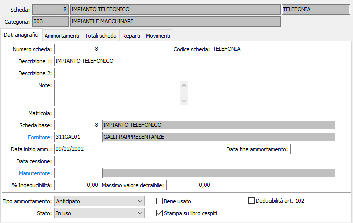

Dati anagrafici

NUMERO CESPITE: campo numerico per indicare il numero di inventario del cespite. Premendo il tasto F12 viene proposto il primo numero scheda disponibile. Sul campo sono attive le funzioni di ricerca (F9).
CODICE SCHEDA: codice alfanumerico univoco per identificare la scheda del cespite. Sul campo sono attive le funzioni di ricerca (F9).
DESCRIZIONE 1: inserire la prima descrizione del cespite che identifica il cespite stesso.
DESCRIZIONE 2: inserire l'eventuale descrizione aggiuntiva a completamento della precedente.
NOTE: campo note per inserire ulteriori informazioni utili a descrivere il cespite.
MATRICOLA: ulteriore descrizione per il cespite in uso.
SCHEDA BASE: in fase di inserimento viene proposto il numero della scheda che si sta inserendo. Nel caso in cui il cespite in esame sia componente di un cespite complesso, indicare l'eventuale cespite capogruppo o cespite padre al quale la scheda deve fare riferimento. La stampa sul libro cespiti avviene in ordine di cespite di riferimento. Sul campo sono attive le funzioni di ricerca (F9).
FORNITORE: codice alfanumerico di 8 caratteri, presente in Anagrafica fornitori, per indicare il codice del fornitore del bene. Nel caso di più fornitori (cespite formato da aggregazione di beni) può essere indicato il più significativo. Sul campo sono attive le funzioni di ricerca (F9) ed accesso interattivo alla tabella collegata (CTRL+W).
DATA INIZIO AMMORTAMENTO: contiene la data dalla quale si inizia a conteggiare gli ammortamenti. In genere coincide con la data di acquisto, salvo i casi in cui questa differisca dalla effettiva messa in funzione del cespite. Tale data è collegata ad un movimento cespiti, e quindi durante l’inserimento manuale delle anagrafiche il campo non deve essere inserito.
DATA FINE AMMORTAMENTO: il campo indica la data di fine ammortamento e deve essere indicato solo per i beni per i quali il periodo di ammortamento è determinato dal bene a cui si riferiscono (ad esempio manutenzioni straordinarie su beni di terzi in cui l'ammortamento termina con il termine del contratto del bene a cui la manutenzione si riferisce).
DATA CESSIONE: contiene la data in cui il cespite viene dismesso dalla produzione e dalla quale pertanto non devono essere più conteggiate le quote di ammortamento. Naturalmente, in caso di vendita, coincide con la data di cessione.
MANUTENTORE: eventuale codice alfanumerico di 8 caratteri, presente in Anagrafica fornitori, per indicare il fornitore che effettua la manutenzione del cespite. Sul campo sono attive le funzioni di ricerca (F9) ed accesso interattivo alla tabella collegata (CTRL+W).
PERCENTUALE INDEDUCIBILITÀ: indicare l'eventuale percentuale di indetraibilità fiscale nel caso in cui l'ammortamento del cespite sia parzialmente o totalmente indetraibile.
MASSIMO VALORE DETRAIBILE: indicare, se previsto dalla normativa fiscale, l’importo massimo detraibile per il cespite (es. autovetture).
TIPO AMMORTAMENTO: indica il tipo di ammortamento cui assoggettare il cespite. Valori possibili: Ordinario; Anticipato; Ridotto.
STATO: definisce lo stato attuale del cespite. Valori ammessi: In uso; Ceduto; Dimesso; Escluso dalla produzione.
BENE USATO: l’inserimento della spunta definisce il bene come usato. Determina l'applicazione dell'ammortamento anticipato solo nell'anno di acquisto.
STAMPA SU LIBRO CESPITI: definisce se la scheda deve essere riportata sul libro cespiti (casella con segno di spunta).
DEDUCIBILITÀ ART. 102: la presenza della spunta indica che il cespite in oggetto ha valore unitario inferiore a 1.000.000 di lire o a 516,46 Euro e che ci si vuole avvalere della facoltà di portarlo interamente in deduzione nel primo anno come previsto dalla relativa norma fiscale.